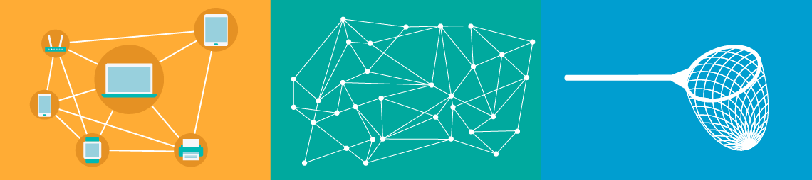

Internet (el internet o, también, la internet) es un conjunto descentralizado de redes de comunicación interconectadas que utilizan la familia de protocolos TCP/IP, lo cual garantiza que las redes físicas heterogéneas que la componen constituyan una red lógica única de alcance mundial. Sus orígenes se remontan a 1969, cuando se estableció la primera conexión de computadoras, conocida como ARPANET, entre tres universidades en California (Estados Unidos). Uno de los servicios que más éxito ha tenido en internet ha sido la World Wide Web (WWW o la Web), hasta tal punto que es habitual la confusión entre ambos términos.
La WWW es un conjunto de protocolos que permite, de forma sencilla, la consulta remota de archivos de hipertexto. Esta fue un desarrollo posterior (1990) y utiliza internet como medio de transmisión. Existen, por tanto, muchos otros servicios y protocolos en internet, aparte de la Web: el envío de correo electrónico (SMTP), la transmisión de archivos (FTP y P2P), las conversaciones en línea (IRC), la mensajería instantánea y presencia, la transmisión de contenido y comunicación multimedia —telefonía (VoIP), televisión (IPTV)—, los boletines electrónicos (NNTP), el acceso remoto a otros dispositivos (SSH y Telnet) o los juegos en línea.
El uso de internet creció rápidamente en el hemisferio occidental desde la mitad de la década de 1990 y desde la década de 2000 en el resto del mundo.
En los 20 años desde 1995, el uso de internet se ha multiplicado por 100, cubriendo en 2015 a la tercera parte de la población mundial. La mayoría de las industrias de comunicación, incluyendo telefonía, radio, televisión, correo postal y periódicos tradicionales están siendo transformadas o redefinidas por Internet, y permitió el nacimiento de nuevos servicios como correo electrónico (e-mail), telefonía por internet, televisión por Internet, música digital, y vídeo digital.Las industrias de publicación de periódicos, libros y otros medios impresos se están adaptando a la tecnología de los sitios web, o están siendo reconvertidos en blogs, web feeds o agregadores de noticias. Internet también ha permitido o acelerado nuevas formas de interacción personal por medio de mensajería instantánea, foros de Internet, y redes sociales.
El comercio electrónico ha crecido exponencialmente tanto por grandes cadenas como pequeñas y medianas empresas o emprendedores, ya que ahora pueden vender por internet productos o servicios hacia todo el mundo.
Los servicios empresariales y financieros en Internet afectan las cadenas de suministro en todas las industrias.
Muchos ven a Internet como una “nube” de tecnología o alguna suerte de repositorio de aplicaciones y datos a los que se puede acceder, trabajar o simplemente consultar. Sin embargo, el uso cotidiano hace que muy pocas veces nos preguntemos qué es realmente.
Internet se define como una gran “red de redes”, es decir, una red conectada a otra de manera continua y simultánea, pero para entenderlo mejor veamos primero qué es una red:
Cada uno de estos gráficos representa una especie de red: de computadoras, de puntos o de pesca. Lo que define a estas redes como tales es que existe “interconexión” entre sus componentes, aún cuando no se encuentren la totalidad de los puntos conectados entre sí. Desde cualquier punto de la red podremos llegar a otro, con más o menos vueltas, pero todos los destinos son alcanzables. Internet es justamente eso: una gran red donde todos los dispositivos están conectados entre sí.
Para que una interconexión sea realmente global, todas las redes que se conectan a la gran red de redes deben hacerlo a través de un mismo protocolo o “lenguaje en común”. Es decir, el protocolo de comunicación de Internet debe ser una implementación estándar que garantice la conexión desde cualquier origen hasta cualquier destino.
Durante la década del ´70, un grupo de investigadores de Estados Unidos creó un protocolo de comunicación que denominaron TCP/IP, y conectaron entre sí a un conjunto de redes de computadoras a pedido del gobierno de ese país, sin saber que el proyecto resultaría tan exitoso y tendría alcance global. De esta forma, TCP/IP se convirtió en el modelo de comunicación de las redes que componen Internet.
Probablemente la computadora que utilizamos a diario en la oficina esté conectada a una red de computadoras. En nuestra casa, la computadora portátil, tablet y celulares los vinculamos a un dispositivo inalámbrico que luego se conecta a la red de fibra óptica de la empresa que nos brinda servicio de Internet y de televisión por cable o telefonía. Éste se comunica a la red de otro Proveedor de Servicios de Internet o ISP (por sus siglas en inglés) más grande, que llega a un número mayor de hogares y empresas, y así sucesivamente. A su vez, estos proveedores de acceso internacional se interconectan con otros más grandes, denominados Carriers, a través de fibras ópticas transcontinentales y satélites, entre otros.
Con el correr de los años, esta gran red de redes ha pasado a ocupar un lugar relevante en múltiples niveles ya que es transversal a cuestiones sociales, políticas y económicas, y ya no excluyente de ámbitos tecnológicos. El impacto de Internet es tal que ha modificado paradigmas y continúa estableciendo nuevos desafíos en torno a la educación, la industria, la seguridad, los derechos humanos, las políticas públicas y las nuevas tecnologías, entre otros.
De lo anterior se hace evidente que Internet no es algo dado y que es producto de un proceso histórico e interdisciplinario que continúa en constante movimiento y en donde la participación de diversas partes interesadas ha sido determinante para su desarrollo. Es por esto que resulta fundamental comprender que la participación de diversos sectores, y más aún de nuevas generaciones, en la Gobernanza de Internet, es indispensable en las definiciones del futuro de Internet, contemplando intereses y derechos de todos los sectores de la comunidad.
Como sucede con las personas, es importante que los equipos tengan un modo común de comunicarse entre ellos. Para la mayoría de los equipos actuales, este modo es TCP/IP. TCP/IP suele venir integrado en los equipos y está automatizado en buena medida, aunque puede ser útil comprender el modelo TCP/IP, en especial si va a configurar un equipo para conectarlo a otro sistema. Este artículo explica cómo funciona TCP/IP.
TCP/IP son las siglas de Transmission Control Protocol/Internet Protocol (Protocolo de control de transmisión/Protocolo de Internet). TCP/IP es un conjunto de reglas estandarizadas que permiten a los equipos comunicarse en una red como Internet.
Por sí mismo, un equipo puede realizar determinadas tareas. Pero su potencia se multiplica cuando es capaz de comunicarse con otros. Muchas de las cosas para las que utilizamos los equipos (enviar mensajes de correo electrónico, ver Netflix u obtener indicaciones para llegar a un sitio) dependen de la comunicación entre ellos. Pueden ser equipos de distintas marcas o incluso encontrarse en zonas del mundo diferentes. Y las personas y programas que los utilizan pueden hablar distintos lenguajes humanos e informáticos.
Una interacción determinada puede darse entre dos sistemas informáticos o involucrar cientos de sistemas. Sin embargo, como sucede al pasar una carta o un paquete de mano en mano, cada transacción se produce entre solo dos equipos cada vez.
Para que esto suceda, los dos equipos deben saber, por adelantado, cómo se espera que se comuniquen.
Los equipos lo resuelven mediante protocolos. Un protocolo es un conjunto de reglas convenido. En términos humanos, utilizamos protocolos sociales para saber cómo comportarnos y comunicarnos con otras personas. Las tecnologías tienen su propia forma de establecer reglas de comunicación, como el telégrafo cuando empleaba el código Morse o una radio CB en la que se utilizan códigos como “10-4”.
Con los equipos sucede lo mismo, aunque las reglas son más estrictas. Cuando todos los equipos emplean el mismo protocolo, es posible transferir información. Cuando no es así, cunde el caos.
La comunicación era más complicada cuando la gente comenzaba a intercambiar información entre equipos. Cada fabricante tenía un sistema de comunicación propio entre sus máquinas, pero dichos sistemas no permitían la comunicación con los equipos de los demás fabricantes. Pronto quedó claro que era necesario un estándar convenido que permitiera a los equipos de todos los fabricantes comunicarse entre ellos. Ese estándar es TCP/IP.
IP es la parte que obtiene la dirección a la que se envían los datos.
TCP se encarga de la entrega de los datos una vez hallada dicha dirección IP.
Es posible separarlos, pero lo cierto es que no tiene mucho sentido diferenciar entre TCP e IP. Como se usan juntos tan habitualmente, “TCP/IP” y “modelo TCP/IP” son ya terminología reconocida.
Mírelo de esta forma: La dirección IP es como el número de teléfono que se asigna a su smartphone. TCP es toda la tecnología que hace que el teléfono emita un timbre al recibir una llamada y que le permite hablar con alguien al otro lado de la línea. Son cosas diferentes, pero tampoco tienen sentido la una sin la otra.
TCP/IP fue desarrollado por el Departamento de Defensa de EE. UU. para especificar el modo en que los equipos transfieren datos de un dispositivo a otro. TCP/IP incide mucho en la precisión y dispone de varios pasos para garantizar la correcta transmisión de los datos entre ambos equipos.
Este es uno de los mecanismos que emplea para ello. Si el sistema enviará un mensaje entero en una pieza y se encontrara cualquier problema, sería necesario enviar de nuevo el mensaje completo. Lo que hace TCP/IP es descomponer cada mensaje en paquetes que se vuelven a ensamblar en el otro extremo. De hecho, cada paquete podría tomar una ruta distinta hasta el equipo de destino si la ruta deja de estar disponible o está muy congestionada.
Además, TCP/IP divide las distintas tareas de comunicación en capas. Cada capa tiene una función distinta. Los datos pasan por cuatro capas independientes antes de recibirse en el otro extremo (como se explica en la sección siguiente). A continuación, TCP/IP recorre estas capas en orden inverso para reensamblar los datos y presentarlos al destinatario.
El propósito de las capas es crear un sistema estandarizado, sin que los distintos fabricantes de hardware y software tengan que gestionar la comunicación por su cuenta. Es como conducir un coche: todos los fabricantes convienen en la posición de los pedales, así que no tenemos que tener eso en cuenta al cambiar de coche. También significa que es posible actualizar determinadas capas, por ejemplo, para mejorar el rendimiento o la seguridad, sin tener que actualizar todo el sistema.
TCP/IP es un protocolo de enlace de datos que se utiliza en Internet. Su modelo se divide en cuatro capas diferenciadas. Cuando se emplean juntas, es posible referirse a ellas como un paquete de protocolos.
La capa de enlace de datos (también denominada capa de enlace, capa de interfaz de red o capa física) es la que maneja las partes físicas del envío y recepción de datos mediante el cable Ethernet, la red inalámbrica, la tarjeta de interfaz de red, el controlador del dispositivo en el equipo, etcétera.
La capa de Internet (también denominada capa de red) controla el movimiento de los paquetes alrededor de la red.
La capa de transporte es la que proporciona una conexión de datos fiable entre dos dispositivos. Divide los datos en paquetes, hace acuse de recibo de los paquetes que recibe del otro dispositivo y se asegura de que el otro dispositivo haga acuse de recibo de los paquetes que recibe a su vez.
La capa de aplicaciones es el grupo de aplicaciones que requiere comunicación de red. Es con lo que el usuario suele interactuar, como el correo electrónico y la mensajería. Como la capa inferior gestiona los detalles de la comunicación, las aplicaciones no tienen que preocuparse por ello.
No. Cuando los paquetes se transmiten entre equipos, son vulnerables y otros pueden verlos. Esa es una de las razones por las que se aconseja evitar las redes Wi-Fi públicas para enviar datos que deban mantenerse privados, así como utilizar cifrado.
Si esto es algo que le preocupa (por ejemplo, si va a enviar información de identificación personal o datos financieros), puede cifrar los datos empleando una red privada virtual (VPN) o trabajando con páginas web con seguridad https.
Hay varios tipos de direcciones IP. No obstante, todas ellas utilizan TCP/IP.
Las diferencias entre los tipos de direcciones IP son transparentes para el usuario esporádico, y el hecho de que no necesite saber mucho al respecto es una de las ventajas de TCP/IP. Normalmente, estos asuntos los administra quien haya configurado el sistema operativo del equipo o el dispositivo móvil. En cualquier caso, a modo de aclaración:
Las direcciones IP estáticas no cambian en ningún momento. Son como la dirección fija de su domicilio, un dato inalterable.
Las direcciones IP dinámicas cambian, o al menos están diseñadas para cambiar. Cuando un sistema informático utiliza una dirección IP dinámica, anuncia “¡aquí es donde puedes encontrarme!” a la red local.
Tal vez haya oído hablar de ciudades en las que la población crece tan rápido que se han tenido que crear nuevos códigos de área para que los recién llegados puedan tener un número de teléfono. Con el número siempre creciente de dispositivos conectados, TCP/IP ha tenido un problema similar. Básicamente, Internet se estaba quedando sin direcciones IP. Por eso se desarrolló una nueva versión de dirección IP denominada IPv6, una alternativa a las direcciones IPv4 existentes.
De hecho, TCP/IP se incluye como estándar
TCP/IP es el paquete de protocolos más utilizado en la web. Millones de personas lo emplean cada día, aunque no sean conscientes de ello.
En la inmensa mayoría de los equipos, TCP/IP se integra como estándar. No tiene que hacer nada para configurarlo de manera manual. En ocasiones, tal vez tenga que decirle a una aplicación cuál es su dirección TCP/IP.
En algunas circunstancias puede querer ocultar su dirección IP, normalmente por motivos de seguridad.
Cada dispositivo tiene su propia dirección TCP/IP. Por lo general, el dispositivo puede comunicarse automáticamente, pero a veces es necesario proporcionar su dirección TCP/IP de forma manual. El modo de encontrar su dirección IP depende del sistema operativo.
Podés consultar tu IP pública desde una página web como https://www.cual-es-mi-ip.net/
Conceptualmente, el número obtenido se puede asemejar a la “dirección” de una habitación de hotel, en la que la gerencia del mismo sabe que puede encontrarlo o el número de teléfono de tu celular.